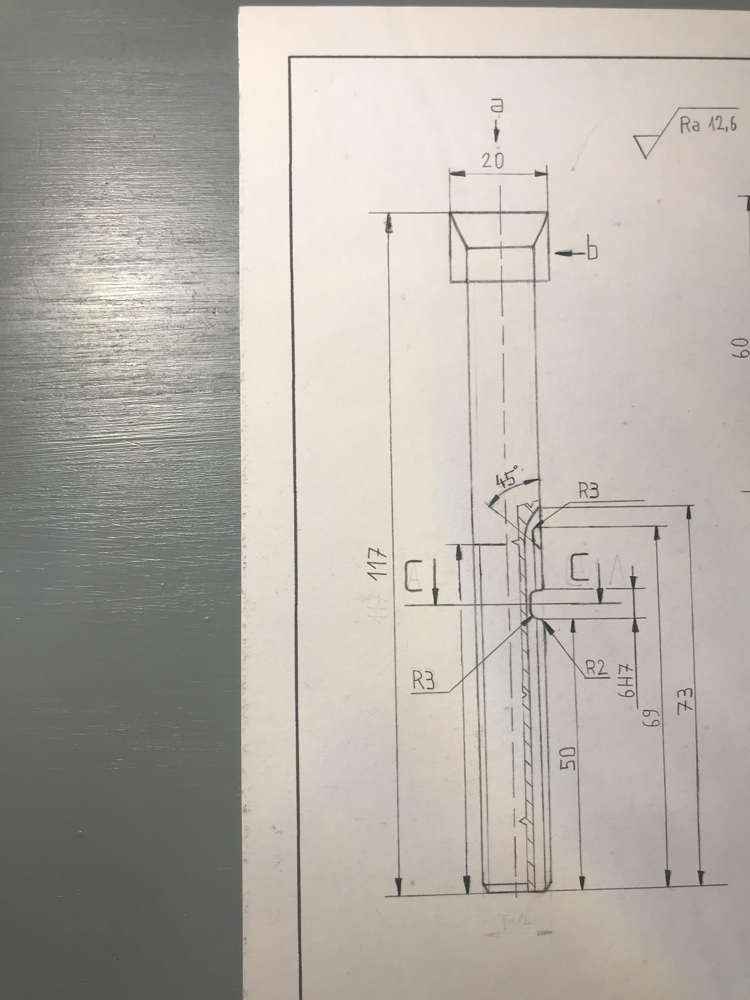

Szakmai szinten nincsenek egyenlőre komolyabb munkáim,
a kevésbé komolyabbakat azonban büszkén mutatom be:
a kevésbé komolyabbakat azonban büszkén mutatom be:
Áteresztőszelep 1 1/4, műszaki tervrajz, 2020.

Franciakulcs fogantyú, műszaki tervrajz, 2020.
Ékszíjtárcsa, műszaki tervrajz, 2020.